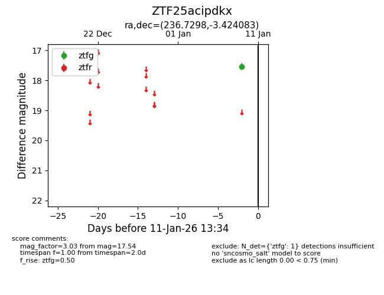
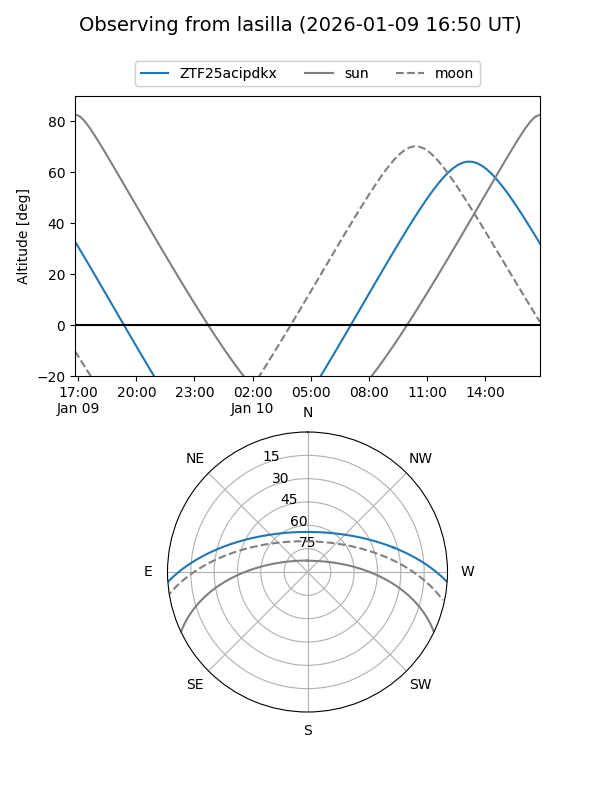
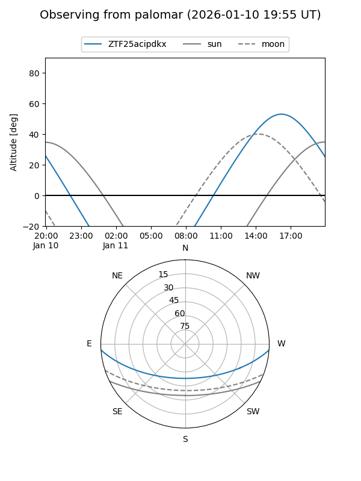

ZTF25acipdkx
Target ZTF25acipdkx at 2026-01-09 13:30
Aliases and brokers:
FINK: link
Lasair: link
ALeRCE: link
alt names
ZTF25acipdkx (ztf,fink_ztf)
Coordinates:
equatorial (ra, dec) = 236.7298,-3.42408
equatorial (HMS+DMS) = 15:46:55.16,-03:25:26.70
galactic (l, b) = (4.0699,+37.82283)
Flags:
Photometry:
last ztfg=17.54
1 ztfg detections
Lightcurve

Visibility


Additional plots